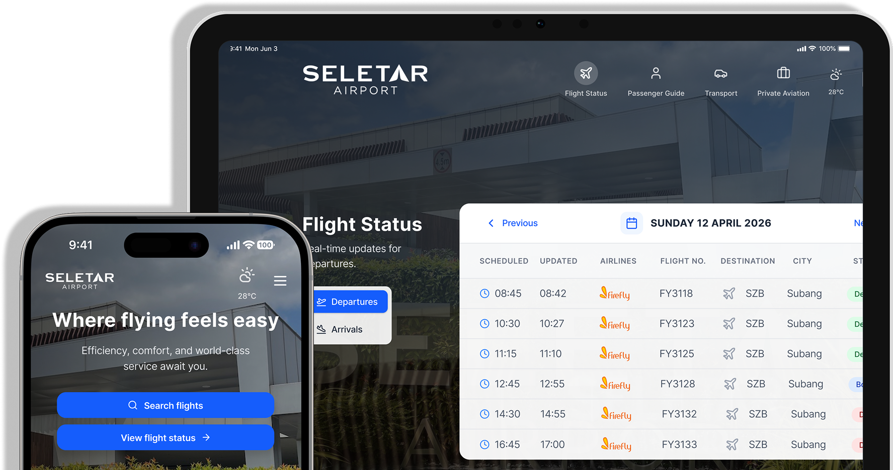
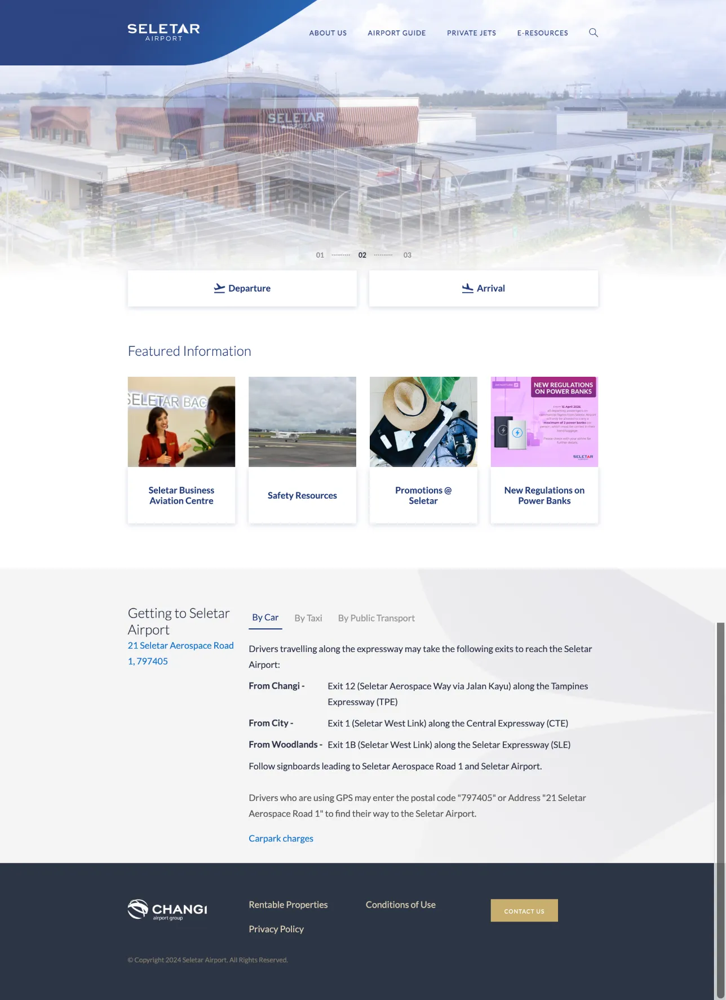
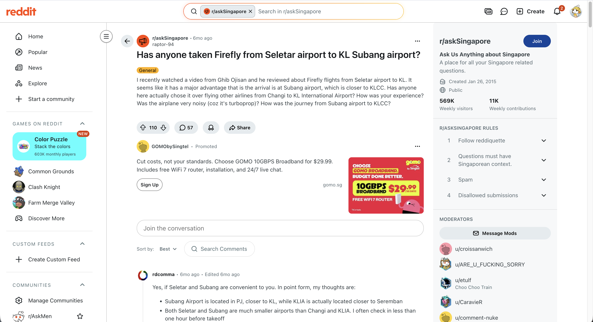
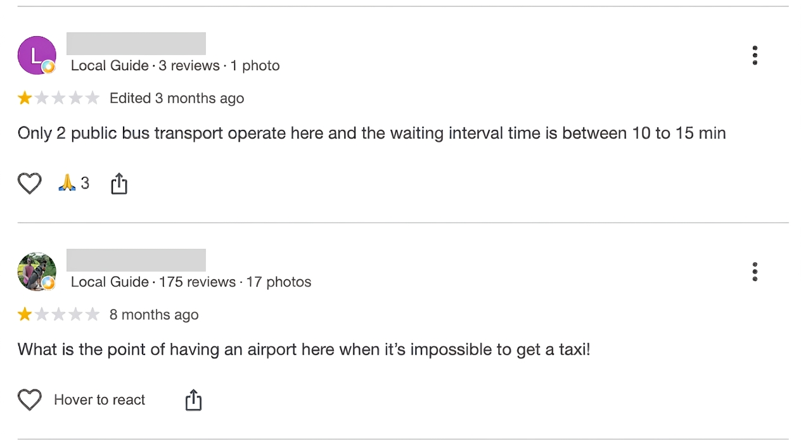
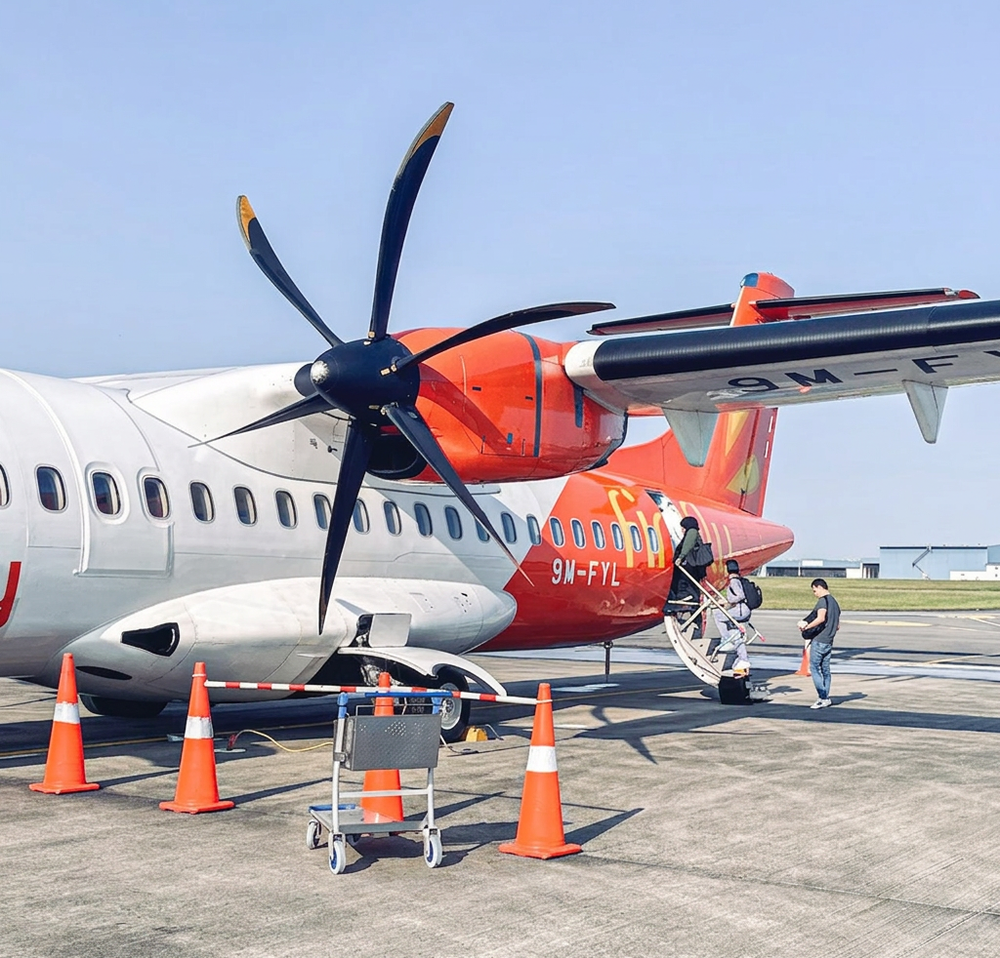

loading...

Seletar Airport gets travellers from curb to gate in minutes. Its website didn't move nearly as fast. Over six weeks, I led the research that uncovered why and helped redesign the site to finally match the airport's speed.
100%
of the travellers we spoke to said speed was the reason they chose Seletar over a bigger airport.
9
discovery interviews (including 8 regular Firefly passengers and 1 private jet traveller), this gave us the first read on what mattered.
2 of 3
goals improved between testing rounds. The third didn't fail outright, it revealed a more specific problem, which now points straight at Version 3.
11
people tested the redesign across two rounds (comprising of 5 in person, 6 remote) giving us honest, before-and-after feedback.
Challenge
Seletar Airport's biggest strength is speed. Firefly flights land in Subang, cutting 45–90 minutes off the trip into Kuala Lumpur. The website never said so. It read like a brochure for any airport, buried the few things people needed, and left first-time travellers with nothing to prepare them.
My Contribution
I led the six-week research sprint end to end, scoping the project to what Seletar Airport's own website could fix, running 9 discovery interviews, and facilitating two rounds of usability testing. My findings shaped the navigation, what each version said first, and where the design should go next.
Most flights from Singapore land at Kuala Lumpur International Airport (KLIA) and the airport is over an hour from the city. Firefly's flights from Seletar land at Subang Airport instead, right on the edge of Kuala Lumpur. That one difference saves passengers 45–90 minutes, and travellers happily pay S$50–100 more for it. We call this The Subang Advantage and it's the entire reason these travellers exist.
Despite this, the website looked like a brochure for a generic airport and not a tool built around the one thing travellers actually cared about.
My Call
I scoped this research to what Seletar Airport's own website could fix and not Firefly's booking or flight systems, even though Firefly's Subang route is the entire reason these travellers exist.

within viewportThe original Seletar airport landing page
Doubles as a transport guide, but that's not obvious above the fold — especially on mobile, where most people were viewing it.
My Call
Problem #3 stayed was later removed during the following round of testing as a fresh pool of testers felt it unnecessary.
#1 Digital Irrelevance
CriticalThe website played no part in how anyone actually planned their trip — people used Google, Reddit, or emails from the airline instead.
8 of 9 travellers raised this

#2 Last-Mile Friction
Highgetting away from the airport was the hardest part of the trip, with Grab waits of 30–45 minutes and only one bus route.
7 of 9 travellers raised this

#3 Operational Anxiety
Mediuma smaller group worried about weather delays or flying on a small propeller plane, and didn't know what to expect.
4 of 9 travellers raised this

Open to UX design and research roles or freelancing service. If you’re building something complex that needs to feel simple particularly for social good — let’s talk!